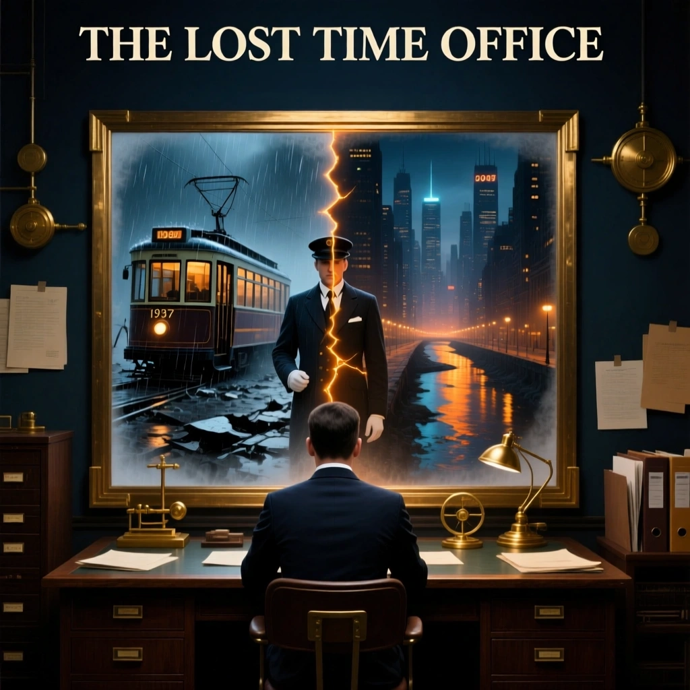

01
CITY ROUTING · NIGHT SHIFT
SEVEN VISITORS · ONE CITYEvery ruling leaves a route behind.
THE LOST
TIME OFFICE
Inspect each displaced visitor. Decide whether they stay—or return to the moment they left.
01INSPECT
02DECIDE
03SEE THE COST
01

Lin MoTRAM CONDUCTOR · 1937
CLUE 03 / CONSEQUENCEWHAT HAPPENS NEXT

RETURN POINT+43 sec
PASSENGERS17 saved
Lin Mo opens the crushed tram door. He dies during the rescue. The city gains one unnamed hero.
RULING 01 / CONFIRMEDCORRECT
The decisive clue points back to 1937.
YOU CHOSESEND BACK
CLUES POINT TOSEND BACK
RULING 01 / CONFLICTINCORRECT
Seventeen lives depend on his return.
YOU CHOSELET STAY
CLUES POINT TOSEND BACK
LIVE SYSTEM VIEWTONIGHT’S ROUTE
2049
THE CITY NOW
LIN MOSENT BACK
01
02
ADA VOSSLET STAY
ZHEN YEYOU ARE HERE
03
04
ARMANDNOT ARRIVED
QIU LANNOT ARRIVED
05
06
MARA-9NOT ARRIVED
DIRECTOR ZERONOT ARRIVED
07
NIGHT SHIFT COMPLETE
5/ 7
THE CITY IS STEADIER—AND COLDER.
You protected history more often than the people living inside it.
SHIFT SCORE1,365
BEST1,420